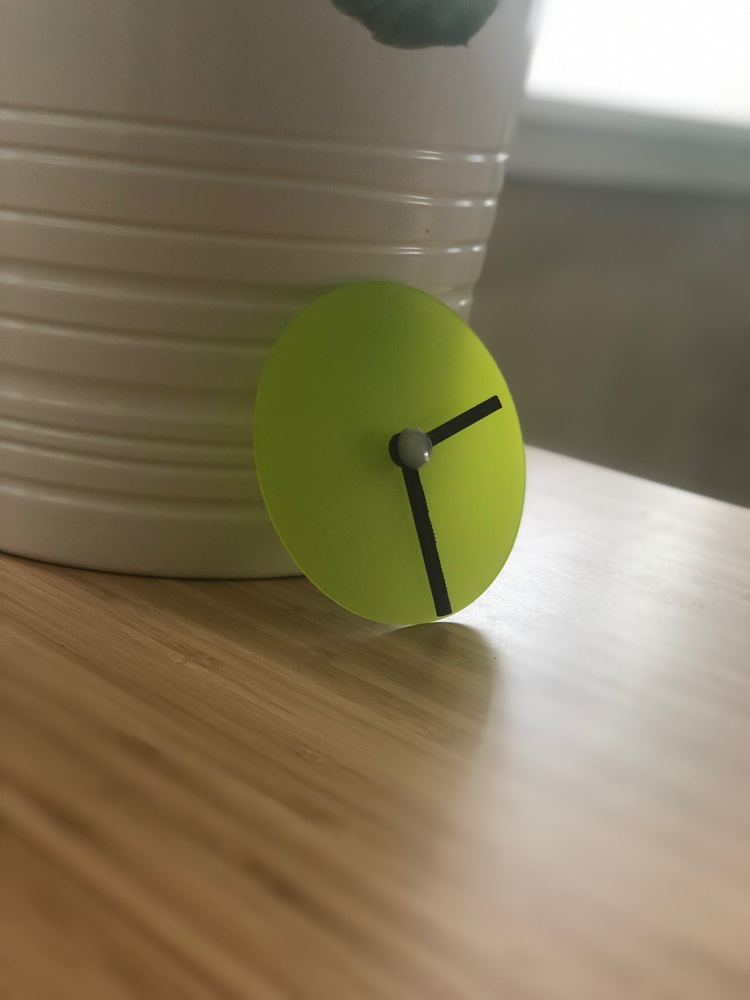
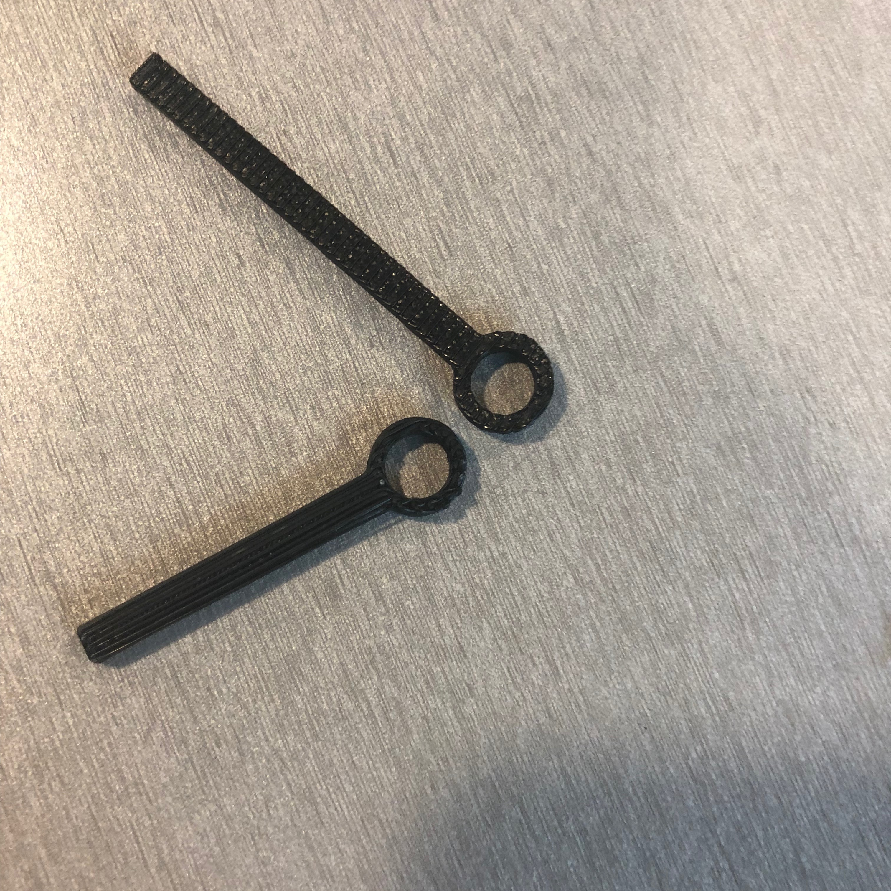
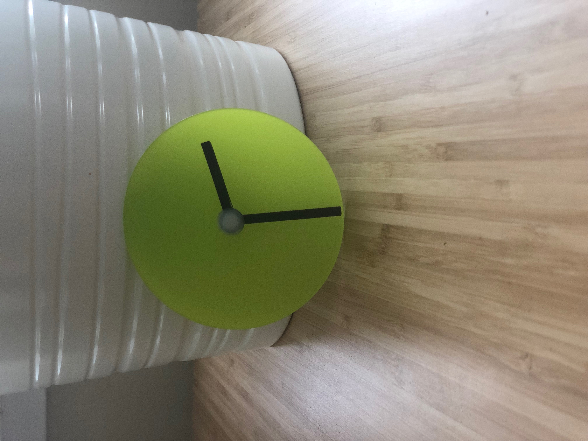

Julie's Final Assignment !
Here is all the documentation for the Final Assignment!
A mixed method laser/3d clock.

BREAKDOWN OF THE DESIGN
The base & hands: I used Onshape to create a 4in diameter clock base. Using Onshape, I created a circle and used the extrude feature so I could the Assemble the components in Onshape to ensure they fit together. After creating the base, I purhcased acrylic from the Mill staff and cut the parts. Unfortunately I was not able to cut in symbols for time on the clock - the MILL was teaching a class for ETCHING on acrylic and was using both machines, therefore was barely able to squeeze in to cut the circular parts.

Designing
The hands: I used Onshape create the hands of the clock, and used a rectangle and circle on Boolean Union to combine the parts and extruded them.

After creating the parts, I combined them in Onshape Assembly to ensure that the parts fit together with the rivet.

Once I confirmed that the shapes fit together in their Assembly, I exported the hands file to a Rhino file, and opened up in Rhino and then exported to STL (I did this because I was having issues uploading my Onshape file directly to the Dremel Digilab printer, and Hannah gave me this tip)
3D printing:
Once at the printer, I loaded the Filamnet and started my file (thanks Kira for the guidance), after about 12 minutes my prints were done!

Combining the parts:
Next I planned to combine the parts with the Rivet and I knew that this part could go either way... luckily! Everything fit first try, and I was pleasantly surprised. 😲

SCHEDULE:
May 30th - June 1st Cad Modeling in Onshape
June 2nd-4th - Laser print, 3D print & documentation
June 5th - Finish documentation
MATERIALS:
Acrylic - sourced from the MILL
Filament - sourced by me
Plastic screw - mahcined part sourced from Joshua (earlier in the quarter)